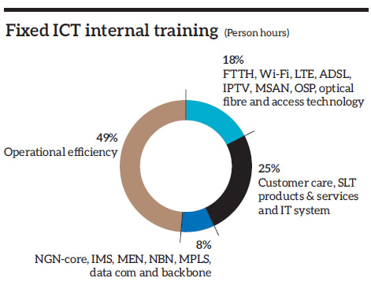

Nurturing an empowered workforce to deliver superior results lies at the core of our human resource strategy. In turn we make every effort to make work rewarding, ensure fairness and foster equal opportunity and diversity.
Our ICT business employed a total of 9,331 persons by end 2015 (2014 – 9,307 persons), with fixed ICT operations accounting for 85% or 7,970 persons and mobile ICT operations employing the balance 1,361 persons.
| Employment type | Fixed ICT operations | Mobile ICT operations | Overall ICT business |
| Permanent | 5,761 | 1,123 | 6,884 |
| Contract | 44 | 42 | 86 |
| Outsourced | 2,165 | 196 | 2,361 |
| Total | 7,970 | 1,361 | 9,331 |
| Business segment | Female | Male | Total | ||
| No. | % | No. | % | No. | |
| Fixed ICT operations | 1,676 | 29 | 4,129 | 71 | 5,805 |
| Mobile ICT operations | 339 | 29 | 826 | 71 | 1,165 |
| Overall ICT business | 2,015 | 29 | 4,955 | 71 | 6,970 |
| Employee grade | Female | Male | Female to male ratio in ICT business | ||||
| Fixed ICT operations | Mobile ICT operations | Overall ICT business | Fixed ICT operations | Mobile ICT operations | Overall ICT business | ||
| Senior management | 16 | 8 | 32 | 65 | 48 | 113 | 1:3.5 |
| Middle management | 94 | 41 | 135 | 263 | 236 | 499 | 1:3.7 |
| Executives | 206 | 290 | 496 | 441 | 536 | 977 | 1:20 |
| Non-executive staff | 1,360 | 0 | 1,360 | 3,360 | 6 | 3,366 | 1:2.5 |
| Total | 1,676 | 339 | 2,015 | 4,129 | 826 | 4,955 | 1:2.5 |
A total of 167,417 person hours of training was provided to SLT employees during 2015, averaging 21 hours per employee. Internal and external programmes accounted for 54% and 46% of training hours respectively.
Employees of both SLT and Mobitel are entitled to reimbursements of membership fees of professional bodies depending on their relevance to the job function. They are also encouraged to pursue higher studies with financial support from the employer subject to certain eligibility criteria and prior management approval.
Going beyond formal educational qualifications, we have also introduced internal programmes that encourage knowledge sharing, job rotation, job enrichment and the like that also help employees to discover and develop their latent talent, thus opening up new career paths and opportunities for upward mobility.
SLT launched two strategic projects, namely, enterprise resource planning (ERP) and customer relationship management (CRM) to support business growth and competitiveness. The need for high staff commitment and involvement were two pillars we identified at the inception, and the project was rolled out by a dedicated transformation programme office of SLT.
The change management plan commenced with a teaser campaign to give high level awareness to staff in advance. This was followed by a series of interactions by and between project teams and staff (users) on the need of these projects, expected mutual benefits and outcomes. They were supplemented by communications via emails, desktop publications and posters. Employee feedback is obtained after each module of the change management programme to take corrective action. The programme is ongoing, the ultimate objective being to gain enthusiastic employee buy-in and adoption of the new technologies and processes to realise the targeted benefits all round.
Innovations through ‘quick wins’ are circulated among staff through the SLT intranet. Brainstorming sessions, team discussions, presentations on market and competitor intelligence, brand health check studies, ‘Amathuma’ internal magazine and the quarterly publication ‘Benchmark’ also help to share knowledge across many aspects such as customers, competitors, overseas telcos, business partners and suppliers as well as emerging trends and changes in the industry.
The revolutionary, state-of-the-art Mobitel Innovation Centre was launched in April 2015 at the TRACE Expert City Colombo where several other ICT companies are based.
The Mobitel Innovation Centre will collaboratively work with like-minded institutions, entrepreneurs, SMEs, students and tech-enthusiasts to harness the best technological solutions. The Centre will focus on solutions related to near field communication (NFC), digital connected life, machine to machine (M2M), location and tracking, cloud platform services and Internet of Things (IoT).
The Group CEO and senior management visit Regional Offices and address employees on special occasions such as Tools Day, Customer Days and Employee Days. Key decisions are communicated through meetings and circulars. ‘Amathuma’ magazine also communicates information on our business activities and the latest developments in ICT.
Meetings with Trade Unions are conducted with the Group CEO and senior management inform on business activities and performance as well as to understand employee expectations and level of satisfaction. The Human Resource Division frequently meets Trade Unions to discuss and resolve grievances faced by employees.
We practice an open-door policy and employees may meet any senior manager including Group CEO. It may be to communicate a grievance, to forward a suggestion or simply to strengthen relationships. Two-way communications is encouraged through cross functional meetings and those conducted within business units. Suggestion boxes provide opportunities for employees to forward their ideas.
Procedures are in place for employees to raise problems concerning their well-being at work for the attention of management. If an employee believes a work condition or treatment is unjust or is a hindrance to effective operation or will create a problem, it could be escalated through the grievance procedure.
Employees having a grievance can forward it to the respective supervisors/line manager which will be then forwarded to the HR Division for resolution. In the event the supervisor is a party to the grievance, then the employee has the option of directly escalating the issue to HR instead of consulting the reporting line. HR takes relevant steps to solve the grievance with the consultation of the respective line and head of department, with decisions taken being communicated to the concerned party.
There is transparency and consistent application of policies and collective agreements where workers’ rights are upheld to a very high standard. All permanent staff members are covered by collective bargaining agreements.
The whistle-blowing policy encourages employees to raise concerns and inform management on acts of misconduct at an early stage.
The contribution made by employees is recognised at various forums. Examples include the annual Quality Award to recognise the winners of 5S implementation, QC and CI teams, Kaizen suggestion scheme and ISO 9001 QMS implementation. Different groups have their own evaluation criteria to select best performers of their teams and Annual Award Ceremonies (such as Service Excellence Awards, Star Awards, Sales Awards, Transformers Awards etc.) are conducted to recognise them.
We recognise the importance of providing a healthy work environment as well as the need to balance one’s family commitments. All work does not mean no play, and vice versa.
We maintain holiday bungalows in seven scenic locations, provide allowances for annual divisional trips to promote camaraderie and bonding, organise numerous social and sports activities, encourage volunteerism and so on.
Fringe benefits provided are comparable to the best in our industry, and include medical insurance, financial support in times of bereavement, concessionary rates on personal ICT packages, laptops and desktops, financial assistance to pursue higher studies etc.
As in the past we organised several supplementary lectures and events on topics such as personality enhancement, psychological approach to life, empowerment of women, pension schemes and life and medical insurance. We also ran a programme on fitness and well-being that included managing one’s body mass index through exercise, yoga and diet.
We also initiated action to establish an SLT Welfare Society and a Telecom Club House.
Our overarching goal is to provide all employees a safe and healthy work environment with zero accidents and zero occupational health risks. This includes training, tools and procedures focused on the preventive side as well as emergency procedures such as evacuation and fire fighting.
Health and safety measures for engineering staff are implemented through specific manuals and procedures published for different categories of staff such as riggers and electricians and duly reinforced through continuous training and evaluations.
Other initiatives include:
Key statistics on recruitment and employee turnover during the year under review are given below:
| Grade | Fixed ICT operations | Mobile ICT operations | Overall ICT business |
| Executive | 56 | 86 | 142 |
| Non-executive | 105 | 0 | 105 |
| Total recruitments | 161 | 86 | 247 |
| Gender | Fixed ICT operations | Mobile ICT operations | Overall ICT business |
| Female turnover | 31 | 20 | 51 |
| Male turnover | 14 | 38 | 52 |
| Total turnover | 45 | 58 | 103 |
| Age group | Fixed ICT operations | Mobile ICT operations | Overall ICT business |
| 21 - 25 | 0 | 3 | 3 |
| 26 - 30 | 11 | 29 | 40 |
| 31 - 35 | 9 | 11 | 20 |
| 36 - 40 | 6 | 7 | 13 |
| 41 - 45 | 4 | 1 | 5 |
| 46 - 50 | 5 | 1 | 6 |
| 51 - 55 | 4 | 0 | 4 |
| 56 - 60 | 6 | 6 | 12 |
| Total turnover | 45 | 58 | 103 |
Employee satisfaction surveys are carried out regularly to assess the quality of work life. Aspects evaluated include career progression, training opportunities, job satisfaction, teamwork, benefits and rewards, management leadership and relationships as well as performance appraisals.
A leading Sri Lankan private channel sought a world class Internet protocol-based broadcasting solution to empower their TV and radio broadcasting. The solution provided by SLT features high quality digital audio and video transmission via SLT’s state-of-the-art optical fibre infrastructure which interconnects the Company’s studios, transmission stations and head office. The Company implemented this solution with the support of US-based Telairity Inc., the global leader in encoding technology, in partnership with systems integrator Mitter International Private Limited.